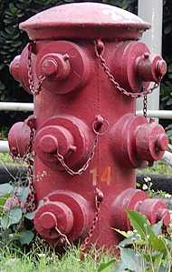
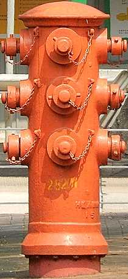
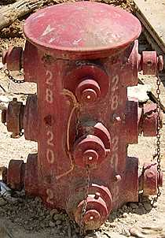
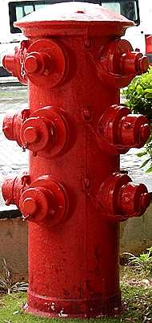
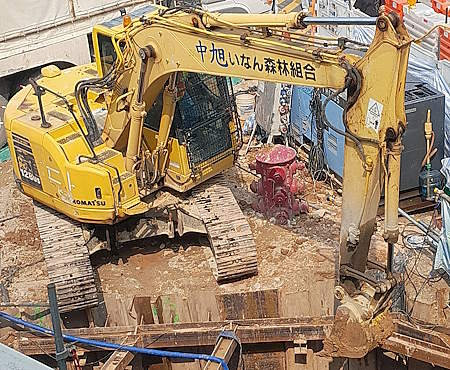
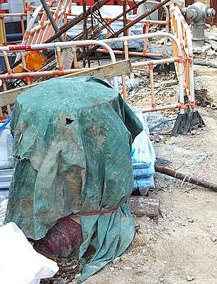

Heavy Draw-off hydrant in Hong Kong
[Sources for this page]Sources for this page
- City Unseen, on Y2025-M06-D24 | Open In Case of Falling Planes: Hong Kong’s Huge Hydrants | https://cityunseen.hk/huge-fire-hydrants/
- Colonial Secretariat, Fire Services Department, Water Authority, Waterworks Office (British Hong Kong), Y1960-M05 to Y1966-M01 | HKRS287-1-688 Fire Fighting - General Corresp. | Public Records Office, Government Records Service (HKSAR Government)
- Fire Services Department (British Hong Kong), in Y1962 | Annual Departmental Reports 1961-62 - Director of Fire Services, paragraph 72 on page 13 (in HKRS41-2-199-1 Annual Departmental Report - Fire Services Department) | Public Records Office, Government Records Service (HKSAR Government) | I learnt about this source from City Unseen https://cityunseen.hk/huge-fire-hydrants/
- Fire Services Department, Water Authority, Waterworks Office (British Hong Kong), Y1961-M08 to Y1964-M06 | HKRS287-1-677 Pedestal Fire Hydrants - Installation of Hydrants - Hong Kong | Public Records Office, Government Records Service (HKSAR Government)
- fl3698, on Y2009-M08-D07 | 啟德機場遺物：重型街井 | Discuss.com.hk | https://www.discuss.com.hk/viewthread.php?tid=10313581 | I learnt about this source from City Unseen https://cityunseen.hk/huge-fire-hydrants/
- Google | Google Maps (Street View) | https://www.google.com/maps/
- HK90's Designer | HK90's-Hong Kong Special style Fire Hydrant Maps | Google Maps My Maps | https://www.google.com/maps/d/viewer?mid=1z_guAyS7KZEnPRg6ZdtJjCkD8_xp_akF
- moddsey, C, David, and IDJ, from Y2009-M09-D18 to Y2009-M10-D15 | Old Fire Hydrant - Waterloo Rd | Gwulo website | https://gwulo.com/node/4431
- Waterworks Office (British Hong Kong), Y1972-M04 to Y1975-M03 | HKRS287-1-683 Fire Hydrant - Island - Records of Installation, Removals, Changes of Position or Type | Public Records Office, Government Records Service (HKSAR Government)
- Waterworks Office (British Hong Kong), Y1970-M03 to M10 | HKRS287-1-684 Fire Hydrant - Mainland - Records of Installation, Removals, Changes of Position or Type | Public Records Office, Government Records Service (HKSAR Government)
- Waterworks Office (British Hong Kong), Y1970-M12 to Y1971-M11 | HKRS287-1-685 Fire Hydrant - Mainland - Records of Installation, Removals, Changes of Position or Type | Public Records Office, Government Records Service (HKSAR Government)
- Waterworks Office (British Hong Kong), Y1973-M02 to Y1975-M05 | HKRS287-1-687 Fire Hydrant - Mainland - Records of Installation, Removals, Changes of Position or Type | Public Records Office, Government Records Service (HKSAR Government)
Heavy Draw-off hydrants were designed by the Water Authority (predecessor of the Water Supplies Department) and manufactured locally in Hong Kong (manufacturer not specified in sources I referred to...). Its initial main purpose was to "deal with major aircraft disasters" (during the Kai Tak Airport era), but it seemed the installation scheme was later expanded to cover high risk areas in general and not just potential aircraft disaster areas. Having twelve outlet nozzles with three on all four sides, the four outlet nozzles on the top row are Type II, while the eight outlet nozzles on the middle and bottom rows are Type I. I recommend checking CityUnseen's article about the history of these hydrants as well: https://cityunseen.hk/huge-fire-hydrants/.
All five extant Heavy Draw-off hydrants are special in their own ways
Number 27001 (previously 14) is the only extant Heavy Draw-off hydrant that is not on a pedestrian footpath. It is in the middle of a small grassy area on the part of a pedestrian island that is not accessible to pedestrians.
Number 28201 (previously 7) is the only extant Heavy Draw-off hydrant that is entirely above ground. If you want to admire the height of a Heavy Draw-off hydrant, visit 28201. Its colour is also slightly vermilion for some reason.
Number 28202 (previously 13) is the only extant Heavy Draw-off hydrant that is...currently at risk of being removed. A lift for a footbridge is being built right next to 28202
Number 30499 (previously 3) is the only extant Heavy Draw-off hydrant that is on the Hong Kong Island. It had all its caps painted blue at some point between Y2009-M07 and Y2011-M02 and it is still like that when this page was released, I believe the blue caps mean it is not currently usable.
There is a retired Heavy Draw-off hydrant being statically displayed at the entrance of the Fire and Ambulance Services Education Centre cum Museum. It is painted bright red but has no markings.
 |
| red Heavy Draw-off hydrant 27001 (previously 14) |
| Argyle Street at Waterloo Road |
| Photo taken in Y2026-M03 |
 |
| red (?) Heavy Draw-off hydrant 28201 (previously 7) |
| Cornwall Street near Waterloo Road |
| Photo taken in Y2026-M04 |
 |
| red Heavy Draw-off hydrant 28202 (previously 13) |
| Boundary Street at Embankment Road |
| Photo taken in Y2026-M03 |
 |
| red Heavy Draw-off hydrant 30499 (previously 3) |
| Lyndhurst Terrace at Hollywood Road |
| Photo taken in Y2026-M03 |
 |
| A retired red Heavy Draw-off hydrant |
| outside the entrance of Fire and Ambulance Services Education Centre Cum Museum |
| Photo taken in Y2026-M05 |
Some more photos of 28202:
 |
| red Heavy Draw-off hydrant 28202 (previously 13) sandwiched between a Komatsu PC128US excavator and an Airman SDG100 diesel engine generator, both of which were operating |
| Boundary Street at Embankment Road |
| Photo taken in Y2026-M04 |
 |
| red Heavy Draw-off hydrant 28202 (previously 13) wrapped in green blanket, primer grey Round Head can be seen in the background |
| Boundary Street at Embankment Road |
| Photo taken in Y2026-M09 |
Are there Heavy Draw-off hydrants that use seawater?
Yes in the past, but not anymore. Heavy Draw-off hydrant number 5 located outside the current location of the Stone Houses on Junction Road used seawater, it was replaced by a yellow Round Head before 2009. Another one numbered 31 near the Ma Tau Wai Road/To Kwa Wan Road Garden was also replaced by a yellow Round Head at some point between Y2009-M09 and Y2011-M02.
Other random facts of Heavy Draw-off hydrant
Heavy Draw-off hydrants were also referred to as "Heavy Draw Hydrant", "Multi-outlet hydrant", "multiple draw-off hydrant", "multiple draw off hydrant", and "multiple drawoff hydrant" in old Fire Services and Water Authority documents.
I don't think the design drawings of Heavy Draw-off hydrants are available publicly, but we can estimate its size based on the size of Type I and II outlet nozzle caps. By my observation and calculation, a Heavy Draw-off hydrant is approximately 160cm tall and its diameter (not including the outlet nozzles) is approximately 44.5cm.
Even though the 1961-1962 Annual Departmental Report of the Fire Services Department mentioned the necessity to install Heavy Draw-off hydrants on a "30 inch high capacity main" which would run through the Kai Tak flight funnel, several Heavy Draw-off hydrants were installed on smaller mains, such as numbers 5 and 30 on 18 inch mains, and number 26 on a 24 inch main.
During the "emergency water supplies for fire fighting" discussion in old documents, it was mentioned that thirty five Heavy Draw-off hydrants would be required in high risk areas (including but not just the Kai Tak flight tunnel) - thirty one in Kowloon and four on Hong Kong Island, but I am not sure if all of them were actually installed, or if they do, the location of all of them.
During the "emergency water supplies for fire fighting" discussion in old documents, the Fire Services initially said that installing Heavy Draw-off hydrants that use seawater as an alternative to underground reservoirs would only be acceptable if each hydrant could "sustain a discharge of 2000-3000 gallons of water per minute for half hour" with the water provided by gravity without mechanical or electrical systems. There were also some concerns raised regarding the installation of Heavy Draw-off hydrants on seawater mains, the most obvious was that the seawater mains were only meant for providing enough pressure for flushing and not the high pressure required by Heavy Draw-off hydrants to fight fires. The other possible issue was the small size of seawater reservoirs these mains were supplied from, as the high flow rate of water when using these hydrants could deplete these reservoirs quickly. But a few seawater Heavy Draw-off hydrants were installed nonetheless so they probably sorted that out one way or the other.
In a 1963 document about financial planning for emergency water supply for fire fighting, the Fire Services estimated the cost of installing fourteen/fifthteen Heavy Draw-off hydrants to be 500000 HKD in 1963 money. In 1965, one single Heavy Draw-off hydrant was estimated to cost 3000 HKD in 1965 money. If you add all the other costs regarding "materials, labour, and transport required to complete the work" together, the total estimated installation cost could vary from 25000 to 65000 HKD per hydrant (1965 money).
Heavy Draw-off hydrants that were mentioned in old documents but we don't know if they actually existed
CityUnseen's article mentioned two locations of potential installations on the Hong Kong Island, being Queen's Road East at post office (the only post office on that road was Wan Chai Post Office) and Queen's College in Causeway Bay (road not specified). I read the source CityUnseen was referring to, it was actually a list of all four proposed to be installed on the Hong Kong Island. The first two in the list, Pok Fu Lam Road and Lyndhurst Terrace, had a handwritten ✓ next to them, and indeed we can find photos of these two hydrants online. The Wan Chai Post Office and Queen's College locations however, do not have ✓. It should also be noted that there are "Octagonal hydrants" at these exact locations - number 31631 (previously 126) outside the old Wan Chai Post Office and number 450 outside Queen's College. There are several possibilities:
| Before HDO discussion | HDO discussion result | Years after HDO discussion | |
|---|---|---|---|
| 1 | no hydrants at these locations | Heavy Draw-off hydrants deemed unnecessary, installed "Octagonal hydrants" | |
| 2 | installed Heavy Draw-off hydrants | "Octagonal hydrants" replaced Heavy Draw-off hydrants | |
| 3 | small hydrants at these locations (such as Swan Neck) | Heavy Draw-off hydrants deemed unnecessary, but replaced the small hydrants with Octagonal hydrants" | |
| 4 | installed Heavy Draw-off hydrants | "Octagonal hydrants" replaced Heavy Draw-off hydrants | |
| 5 | Octagonal (or similarly sized) hydrants at these locations | ||
| 6 | "Octagonal hydrants" have always been the only type at these locations | ||
I believe what happened was, twenty eight Heavy Draw-off hydrants were approved for installation to "cover the Kai Tak flight tunnel", then six more were "believed to be required" to cover high risk areas unrelated to the flight tunnel, the Wan Chai Post Office and Queen's College locations might be among the additional six. I personally think possibilities 1 or 6 (with my preference being 6) are the most likely, the lack of ✓ next to those locations in the list was one reason but I also think it was unlikely for the departments to replace Heavy Draw-off hydrants with the older "Octagonal hydrants" and not the newer Round Head type. "Octagonal hydrants" are probably the only hydrant type these locations ever got, but I wouldn't mind being proven wrong.
One location that no one seems to have discussed was Cotton Path in So Kon Po. There were several mentions of a Heavy Draw-off hydrant that was installed or proposed to be installed and connected to a 27 inch trunk main fed by pumps on Garden Road. I am not sure if this Heavy Draw-off hydrant was ever installed.